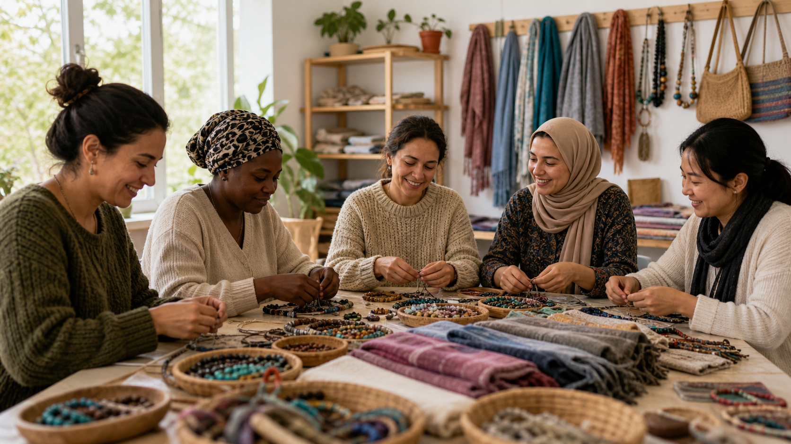
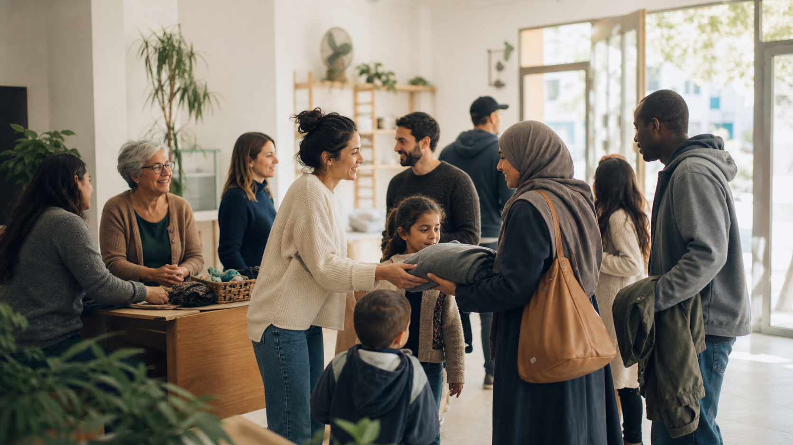

Food support and family connection
A short update can show how food distribution, conversation, and practical guidance support refugee and migrant families.
Food bank / community center note
Field notes from Diez42 Málaga
This direction treats the homepage like a living notebook: food bank updates, language activities, training programs, partner projects, and stories from immigrants and refugees finding community in Málaga.
v83.3
Latest notes

A short update can show how food distribution, conversation, and practical guidance support refugee and migrant families.
Food bank / community center note
Language practice, children's English activities, job training, and parent programs can each become simple photo stories.
Education and training note

The Elevāt artisan/co-op project gives women from different countries a way to make bracelets, scarves, accessories, and income for their families.
Partner project note
The editorial approach is good if Diez42 can share real photos and short updates over time.
Contact
This can become a simple email link, WhatsApp link, or static form provider later.